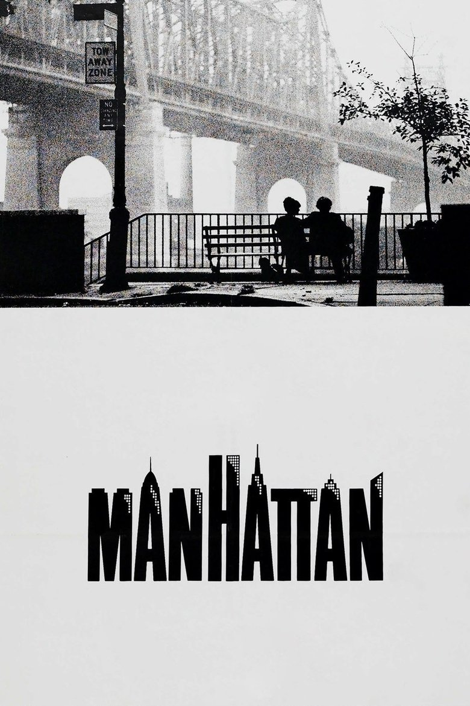

Fiche technique

Synopsis
Isaac Davis, 42 ans, auteur télé démissionnaire qui rêve d'écrire un livre sur New York, navigue entre les décombres élégants de sa vie sentimentale : une ex-femme (Meryl Streep) qui publie un livre au vitriol sur leur mariage, une liaison avec Tracy, lycéenne de 17 ans qu'il s'efforce de ne pas prendre au sérieux, et une attirance croissante pour Mary (Diane Keaton), l'intellectuelle brillante et insécure qui est aussi la maîtresse de son meilleur ami Yale[1].
Le chassé-croisé amoureux — Isaac quitte Tracy pour Mary, Mary retourne à Yale, chacun rationalise ses lâchetés dans des dialogues étincelants — s'achève sur la course d'Isaac à travers la ville pour rattraper Tracy, la seule du quatuor à n'avoir jamais menti, au moment où elle part pour Londres. « Il faut avoir un peu foi dans les gens » : le mot de la fin appartient à la plus jeune[1].
Contexte de production
Après le triomphe d'Annie Hall (quatre Oscars) et la parenthèse bergmanienne d'Interiors, Allen retrouve son coscénariste Marshall Brickman pour un projet conçu, dès l'origine, comme un objet visuel et musical : filmer New York en noir et blanc et en Panavision anamorphique — une première pour lui — parce que, disait-il, la ville est « en quelque sorte l'un des personnages du film », et la rêver sur les compositions de George Gershwin, Rhapsody in Blue en tête, enregistrées avec le New York Philharmonic dirigé par Zubin Mehta[1][2].
L'anecdote de production la plus célèbre est un jugement d'auteur : à la vision du montage final, Allen fut si mécontent qu'il demanda à United Artists de ne pas sortir le film, offrant d'en tourner un autre gratuitement à la place[1]. Le studio refusa — et encaissa le deuxième plus gros succès commercial de la carrière du cinéaste : 39,9 millions de dollars pour 9 de budget[1]. Autre légende exacte : pour le plan du banc face au pont de Queensboro à l'aube, l'équipe s'installa à 5 heures du matin, la ville ayant accepté de laisser les guirlandes du pont allumées[1].
Structure narrative
Le film s'ouvre en voix off sur les brouillons successifs du livre d'Isaac — « Chapitre premier. Il adorait New York... » — réécrits en direct jusqu'à trouver le ton, pendant que défilent les images de la ville et que monte Rhapsody in Blue jusqu'au feu d'artifice sur Central Park. Toute la construction est annoncée là : le récit sera celui d'un homme qui n'arrête pas de réécrire sa propre vie sentimentale comme un manuscrit, en cherchant la version qui le rendrait admirable[1].
La dramaturgie procède par permutations de couples au fil des saisons et des lieux — galeries, librairies, planétarium, appartements en déménagement perpétuel — jusqu'au renversement final : le monologue au magnétophone (« pourquoi la vie vaut-elle d'être vécue ? »), où l'inventaire des raisons de vivre (Groucho Marx, Willie Mays, Flaubert, les pommes et poires de Cézanne...) bute sur « le visage de Tracy », et déclenche la course à travers la ville — citation inversée du finale de City Lights, l'aveu romantique après le cynisme.
Mise en scène et procédés techniques
Le geste esthétique fondateur — noir et blanc + Scope — produit l'un des films les plus somptueusement photographiés du cinéma américain. Gordon Willis, le « prince des ténèbres » du Parrain, y invente un romantisme documentaire : la silhouette des amants minuscules sous le pont de Queensboro à l'aube, les corps réduits à des ombres dans le planétarium — scènes entières jouées dans le noir presque total, où seules les voix continuent la comédie — ou l'orage sur Central Park en négatif de carte postale[1][2].
Le format large, d'ordinaire réservé aux westerns, recadre la comédie de mœurs à l'échelle du paysage urbain : les personnages parlent de leurs névroses au premier plan pendant que la ville, autour, les écrase doucement de sa beauté. Et Gershwin fait le reste — la partition n'accompagne pas le film, elle le contredit : là où les dialogues ironisent, rationalisent, esquivent, l'orchestre affirme un lyrisme sans guillemets. Tout Manhattan tient dans cette tension entre la petitesse des conduites et la grandeur du décor sonore et visuel[2].
Personnages principaux
Isaac Davis (Allen) se présente en moraliste — il démissionne par intégrité, sermonne Yale sur sa lâcheté — mais le film, plus lucide que son héros, documente l'écart entre ses principes déclamés et ses conduites : il traite Tracy en parenthèse charmante, précisément parce que son sérieux à elle le mettrait en cause. Mary (Diane Keaton, éblouissante) est son double inversé : intelligence suréquipée, jugement esthétique en bandoulière (« l'Académie des Surfaits »), et une panique sentimentale qu'aucun vocabulaire ne protège.
Tracy (Mariel Hemingway, nommée à l'Oscar à 18 ans) est le centre moral du film — la seule qui dise ce qu'elle ressent et fasse ce qu'elle dit. C'est aussi, vue d'aujourd'hui, sa figure la plus troublante : une lycéenne de 17 ans aimée par un homme de 42, que le film de 1979 traitait avec un naturel que plus personne ne lui accorde — la section suivante y revient, car on ne peut plus écrire sur Manhattan sans écrire aussi sur cela[3][4]. Yale (Michael Murphy) complète le quatuor en lâche ordinaire — le meilleur ami dont la scène de confrontation dans la salle de squelettes dit tout : « Tu te prends pour Dieu ! — Il faut bien que je me modèle sur quelqu'un. »
Thèmes
Le thème officiel est New York — ou plutôt l'écart entre la ville réelle et la ville rêvée. Isaac le dit dès l'ouverture : il « romantise tout démesurément ». Le noir et blanc n'est pas une coquetterie mais une thèse : ce Manhattan-là n'a jamais existé, c'est la ville des films et des disques de l'enfance, un idéal esthétique auquel les personnages mesurent — et donc condamnent — leur vie réelle.
D'où le second thème, l'intégrité impossible : tous les personnages parlent de morale avec brio et agissent par convenance — la culture comme alibi, l'ironie comme anesthésie. Le film est une comédie sur la mauvaise foi des gens cultivés, où le langage sert moins à se comprendre qu'à se donner le beau rôle. Et c'est la sincérité sans culture de Tracy — troisième thème, le plus disputé — qui sert d'étalon : la « foi dans les gens » que l'adolescente oppose au scepticisme des adultes est à la fois la leçon morale du film et, pour ses relecteurs contemporains, le nœud du problème — l'innocence érigée en idéal amoureux par un récit écrit du point de vue de l'homme qui en bénéficie[4].
Réception critique et postérité
Triomphe critique immédiat : « la comédie la plus noire depuis les grands jours de Preston Sturges », écrit Arthur Knight dès avril 1979, saluant « l'un des artistes les plus audacieux et novateurs du cinéma américain »[5]. Nominations aux Oscars (scénario ; Hemingway en second rôle), BAFTA du meilleur film, César du meilleur film étranger ; en 2013 encore, les lecteurs du Guardian le votaient meilleur film de son auteur[1]. Une voix discordante mérite pourtant d'être citée, car elle avait vu tôt ce que la postérité allait agrandir :
« Quel homme de quarante ans, sinon Woody Allen, pourrait faire passer un penchant pour les adolescentes pour une quête de valeurs authentiques ? » Pauline Kael, citée dans les relectures contemporaines du film[4]
Car la postérité de Manhattan est double. Le film reste un sommet formel incontesté — et, depuis les années 2010, l'exemple canonique de l'œuvre réexaminée à la lumière de son auteur : les allégations portées contre Allen (qu'il a toujours niées), le documentaire Allen v. Farrow, et la déclaration de Mariel Hemingway elle-même — le film « ne pourrait pas sortir aujourd'hui, à 100 % », tout en précisant qu'Allen fut « merveilleux » avec elle sur le tournage — ont durablement changé les conditions de son visionnage[3][4]. Fait remarquable : Allen lui-même n'a jamais aimé le film, au point d'avoir voulu l'empêcher de sortir[1].
Conclusion
Manhattan est probablement le plus beau film de son auteur et le plus difficile à regarder simplement — et il faut tenir les deux bouts. Formellement, rien n'a vieilli : le mariage du Scope, du noir et blanc de Willis et de Gershwin reste un des sommets du romantisme urbain au cinéma, imité partout, égalé nulle part. Moralement, le film a changé de nature avec le temps : ce qui se présentait comme une comédie sur la mauvaise foi des adultes cultivés se relit aussi, désormais, comme un document sur les angles morts de son époque — et de son auteur.
Le plus troublant est que le film contient sa propre critique : personne n'y est plus sévère avec Isaac Davis que le scénario lui-même, et la dernière image — ce sourire de Tracy qui répond « il faut avoir un peu foi dans les gens » — laisse le quadragénaire sans réplique, pour une fois. Chef-d'œuvre et pièce à conviction, carte postale et aveu : Manhattan demeure ce que New York est pour Isaac — une chose qu'on romantise démesurément, en sachant très bien ce qu'on choisit de ne pas voir.
Sources
- Wikipédia (en) — « Manhattan (1979 film) » : production (N&B Scope avec Willis, Gershwin/Mehta, demande d'Allen de ne pas sortir le film, scène du pont de Queensboro), distribution, box-office, récompenses, postérité (sondage du Guardian 2013). en.wikipedia.org
- American Society of Cinematographers — « Manhattan: Black-and-White Romantic Realism » (article référencé via recherche web ; accès direct refusé lors de la consultation). theasc.com
- Variety — « 'Manhattan' Star Mariel Hemingway Says the Woody Allen Film '100% Couldn't Come Out' Today » (2021). variety.com
- The Irish Times — « In 1979 nobody bat an eyelid about Woody Allen's character (42) dating a 17-year-old » et relectures contemporaines associées (citation de Pauline Kael, contexte Allen v. Farrow), consultées via recherche web. irishtimes.com
- AFI Catalog — « Manhattan (1979) » : critique d'Arthur Knight (Hollywood Reporter, 23 avril 1979), données de production. catalog.afi.com